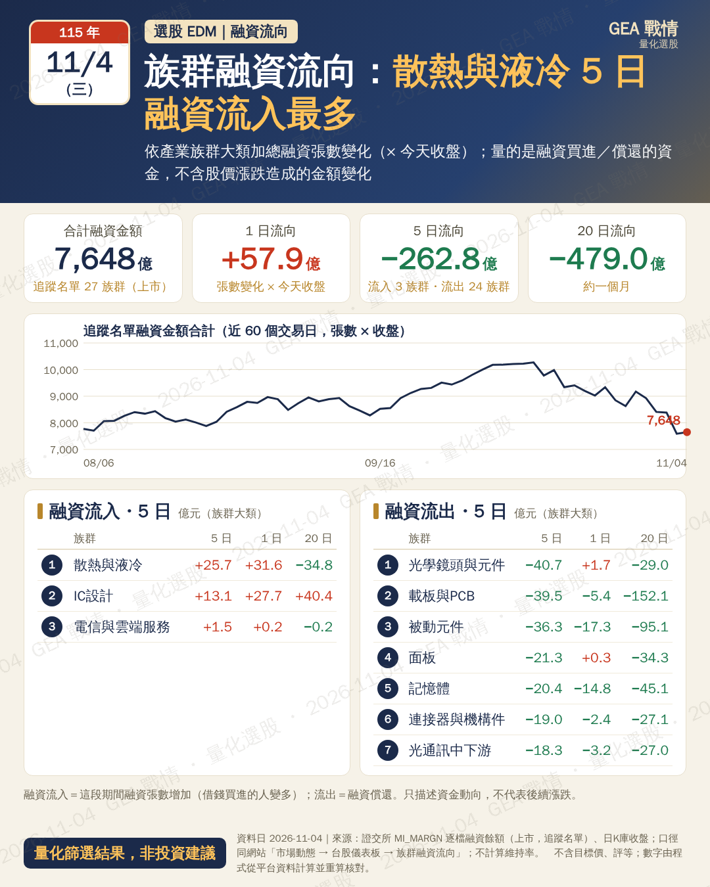

族群融資流向 EDM 預覽（11-05）
要看的重點
跟網站同一份資料檔、同一套算法
數字用另一份收盤檔（stock_bars）重算核對，沒過不出
族群融資流向（5 日）
下載 PNG

核對通過
27 個族群 × 融資金額、1／5／20 日流向逐一重算（收盤 stock_bars 134 檔、daily.npz 52 檔）；族群加總＝合計
・口徑＝網站台股儀表板「族群融資流向」同一份 margin.json
・上半：5 日流入／流出前 8 族群（附 1 日、20 日）；下方：融資金額合計走勢
・不計算維持率；只描述資金動向